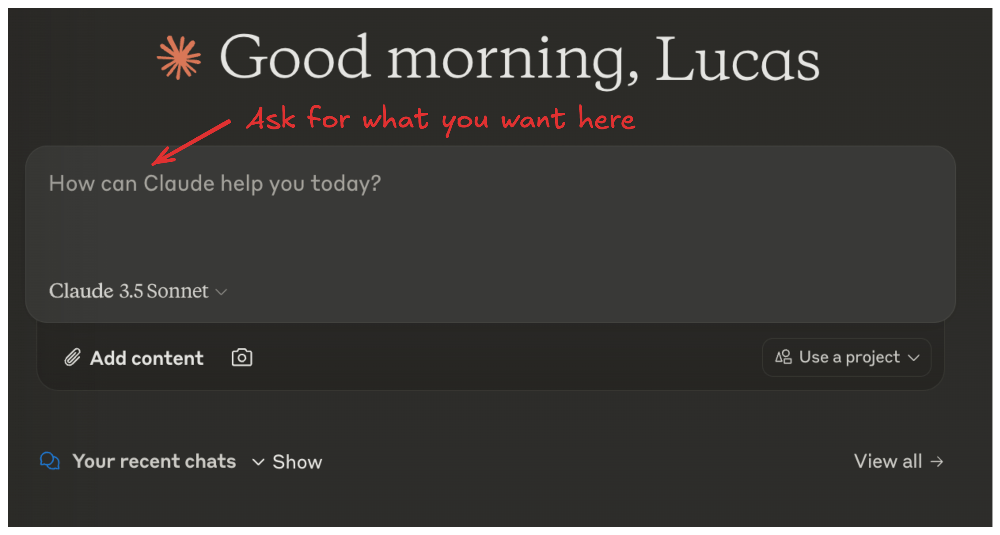
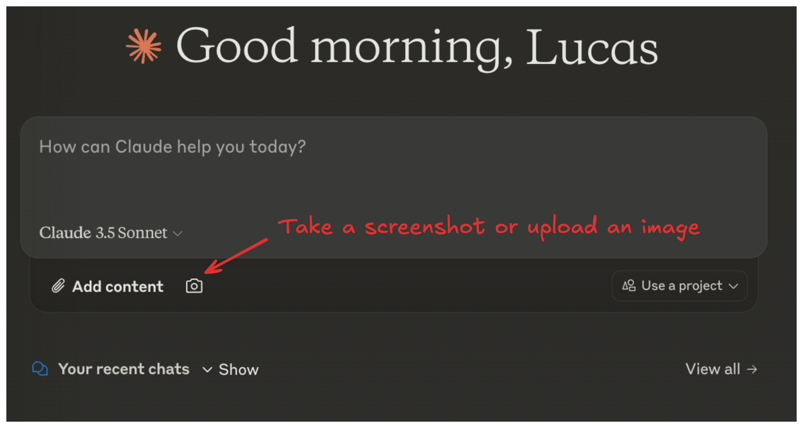
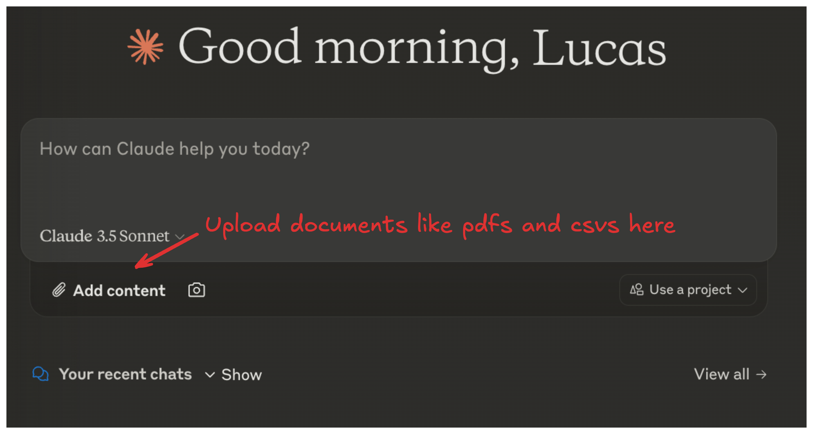
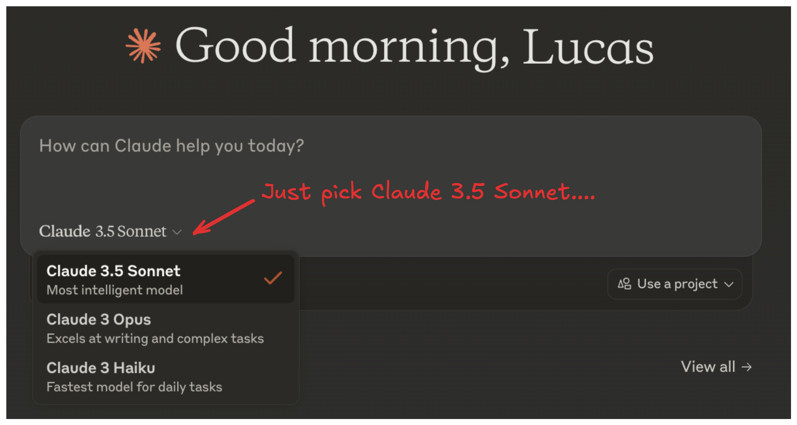
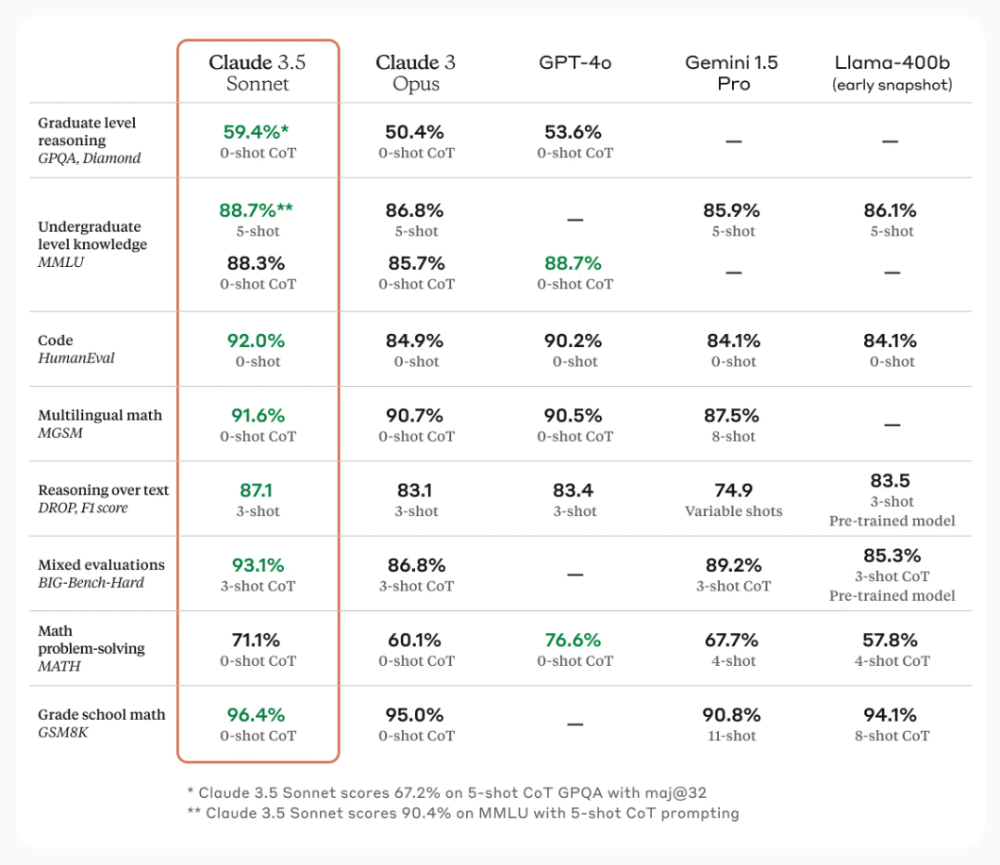
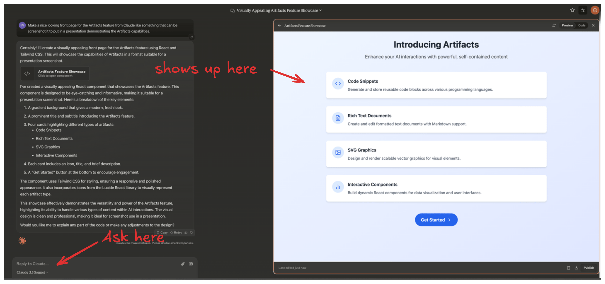
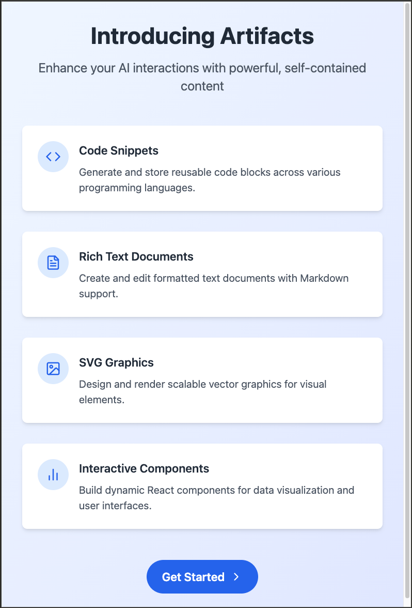

class: center, middle # Introduction to Claude --- # Agenda 1. What is Claude? -- 2. Capabilities -- 3. Model Options -- 4. What is Artifacts? -- 5. Use Cases --- # What is Claude? - A family of highly performant and intelligent AI models -- - Built by Anthropic -- - Powerful, extensible, and trustworthy -- - Follows critical protocols -- - Makes fewer mistakes -- - Resistant to jailbreaks --- # Capabilities Claude with the chat interface can help with: - Text and code generation <div style="text-align: center;">  </div> --- # Capabilities Claude with the chat interface can help with: - Vision tasks <div style="text-align: center;">  </div> --- # Capabilities Claude with the chat interface can help with: - Interacting with documents <div style="text-align: center;">  </div> -- - <span style="color: gray;">_No image generation or web browsing on the standard interface_</span> --- # Text and Code Generation - Adhere to brand voice for customer-facing experiences -- - Create production-level code -- - Operate within complex codebases -- - Automatic translation between languages -- - Complex financial forecasts -- - Legal use cases requiring high-quality technical analysis <p style="font-size: 14px; margin-top: 200px; margin-left: 10px"> <a href='https://www.anthropic.com/news/claude-3-5-sonnet'>Claude 3.5 Sonnet results from Jun 2024</a> </p> --- # Vision Capabilities -- - Process and analyze visual input -- - Extract insights from charts and graphs -- - Generate code from images -- - Describe images for users with low vision --- # Model Options: Claude 3 Family <div style="text-align: center;">  </div> <div style="display: flex; justify-content: space-between;"> <div style="flex: 1; padding: 0 10px;"> <h2>Opus</h2> <ul> <li>Strong performance on highly complex tasks</li> <li>Math and coding</li> <li>R&D, brainstorming</li> <li>Strategy, advanced analysis</li> </ul> </div> <div style="flex: 1; padding: 0 10px;"> <h2 style="color: green;">Sonnet</h2> <ul> <li>Balances intelligence and speed</li> <li>High-throughput tasks</li> <li>Sales forecasting</li> <li>Code generation</li> <li>Live support chat</li> </ul> </div> <div style="flex: 1; padding: 0 10px;"> <h2>Haiku</h2> <ul> <li>Near-instant responsiveness</li> <li>Human-like interactions</li> <li>Content moderation</li> <li>Extracting knowledge from unstructured data</li> </ul> </div> </div> --- # Claude 3.5 Sonnet - Most intelligent model - Combines top-tier performance with improved speed - Currently the only model in the Claude 3.5 family <div style="text-align: center;">  </div> <p style="font-size: 14px; margin-top: 0px; margin-left: 240px"> <a href='https://www.anthropic.com/news/claude-3-5-sonnet'>Claude 3.5 Sonnet results from Jun 2024</a> </p> --- # Use Cases - Advanced research and analysis -- - Complex problem-solving -- - Sophisticated language understanding and generation -- - High-level strategic planning --- class: center, middle <h1> <span style="background-color: lightgreen"> Claude Demo </span> </h1> --- # What is Artifacts? <div style="text-align: center;">  </div> --- # What is Artifacts? - Dedicated windows displaying substantial, standalone content -- - Interactive, editable outputs separate from the main conversation -- - Represent Claude's evolution into a collaborative work environment <div style="text-align: center;"> </div> --- # Characteristics of Artifacts - Significant and self-contained (typically over 15 lines) -- - Content likely to be edited, iterated on, or reused -- - Complex pieces that stand on their own -- - Intended for reference or future use --- # Types of Artifact Content <div style="text-align: center;">  </div> <span style="color: gray;">Generated with Artifacts</span> --- # Types of Artifact Content - Documents (Markdown or Plain Text) -- - Code snippets -- - Websites (single page HTML) -- - Scalable Vector Graphics (SVG) images -- - Diagrams and flowcharts -- - Interactive React components (means you can prototype real apps) --- class: center, middle <h1> <span style="background-color: lightgreen"> Artifacts Demo </span> </h1> --- # Accessing Artifacts 1. Start or continue a conversation with Claude -- 2. Request content that typically results in an Artifact -- 3. Artifact window appears on the right side of the chat interface -- 4. Two tabs: "Code" and "Preview" -- 5. Edit code, view preview, or ask Claude for changes -- 6. Switch between Artifacts using chat controls --- # Editing Artifacts - Modify content in real-time -- - Ask Claude to make changes via chat -- - Non-destructive edits with version history -- - Access previous versions using the version selector --- # Saving and Exporting Artifacts - Copy to clipboard -- - Download as file -- - Access version history -- - Save to projects (for better organization) -- - Team sharing (for Claude Team users) --- # Artifacts vs. Regular Chat Responses .pull-left[ Regular Responses: - Inline text - Primarily text - Static - Typically shorter - Limited visualization ] .pull-right[ Artifacts: - Dedicated window - Multiple formats - Fully editable - Larger, complex content - Rich visualization options ] --- # Integration with Projects - Associate Artifacts with specific chats -- - Grant team member access for collaboration -- - Share in Project's activity feed -- - Manage complex, long-term projects efficiently --- class: center, middle # Thank you! --- class: center, middle # Q&A ---